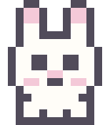

About me
Catatan singkat tentang latar belakang, pendidikan, kemampuan, dan bahasa yang dikuasai Insania.
Profil
Mahasiswa Sistem Informasi Universitas Brawijaya yang memiliki pengalaman aktif dalam organisasi, administrasi, kepemimpinan, dan kegiatan pengembangan siswa. Terbiasa mengelola dokumen, berkoordinasi dalam tim, serta menjalankan kegiatan secara terstruktur.
Memiliki ketertarikan pada teknologi dan data, khususnya pengelolaan data, analisis data, dan pengembangan solusi sistematis.

Pendidikan
- Universitas BrawijayaSistem Informasi, 2026 sampai sekarang
- SMA Negeri 1 Wates2023 sampai 2026
Keterampilan
Keterampilan Organisasi
- Leadership
- Teamwork
- Komunikasi dan Koordinasi
- Public Speaking
- Problem Solving
- Time Management
- Event Management
- Training & Mentoring
Keterampilan Administrasi
- Administrasi Organisasi
- Surat-Menyurat
- Penyusunan Proposal dan Laporan
- Dokumentasi Kegiatan
- Pengelolaan Arsip dan Dokumen
Keterampilan Teknis
- Microsoft Word
- Microsoft Excel
- Microsoft PowerPoint
- Social Media Management
Bahasa
- Bahasa Indonesia Fasih/Native
- Bahasa Inggris Terbatas namun fungsional